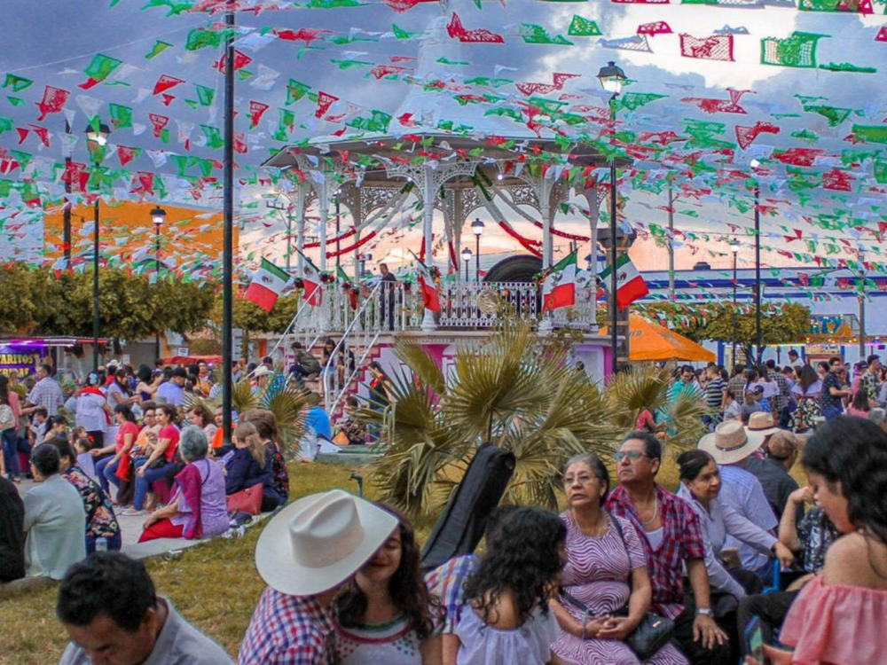
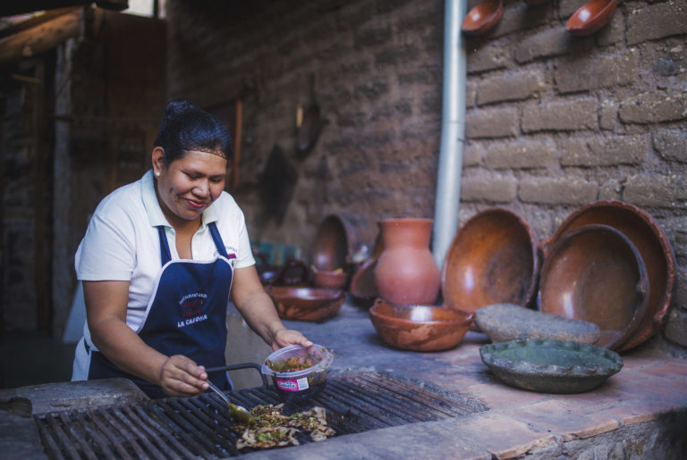

¿Dónde está ubicado?
Ixtlán del Río se encuentra en la región occidental de Nayarit, México. Limita al norte con el municipio de Jala, al sur con el municipio de Ahuacatlán, al este con el municipio de Tepic y al oeste con el municipio de Jalisco.

Fiestas Tradicionales
Las festividades más importantes de Ixtlán del Río son las celebraciones en honor a la Virgen de la Asunción, que se celebran del 12 al 15 de agosto, con procesiones y eventos culturales. También se celebran las fiestas en honor a San Sebastián el 20 de enero.
¿Qué produce?
Ixtlán del Río es un municipio con una economía agrícola destacada, produciendo maíz, frijol, caña de azúcar, y hortalizas. También es una zona ganadera, especialmente en la cría de ganado vacuno.
